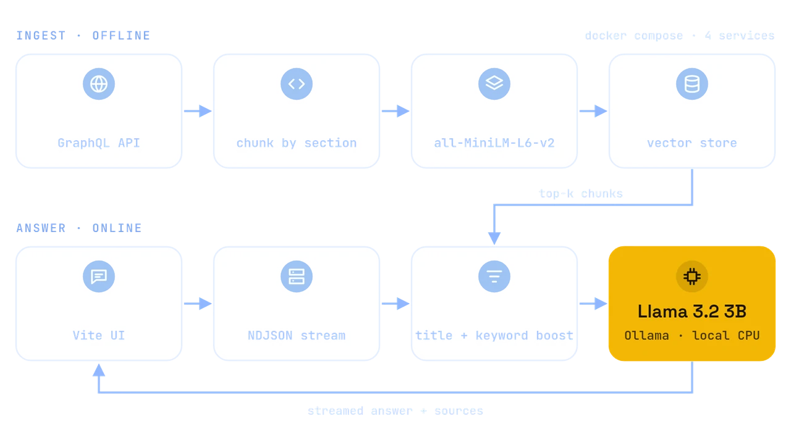
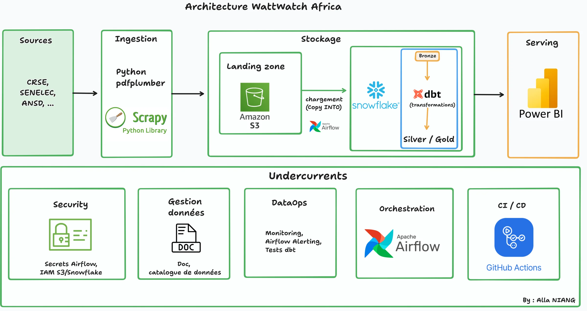
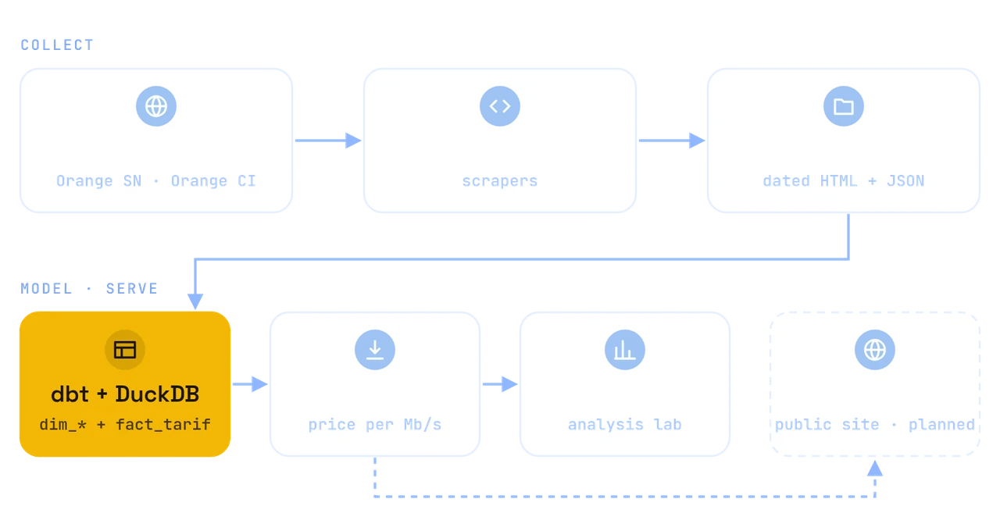
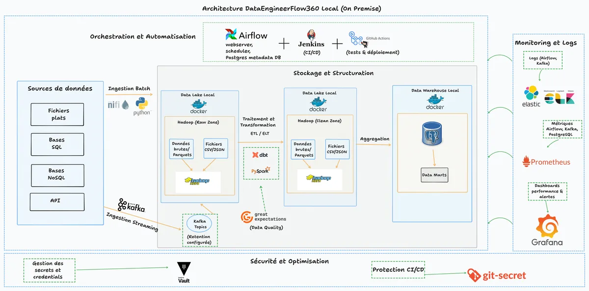
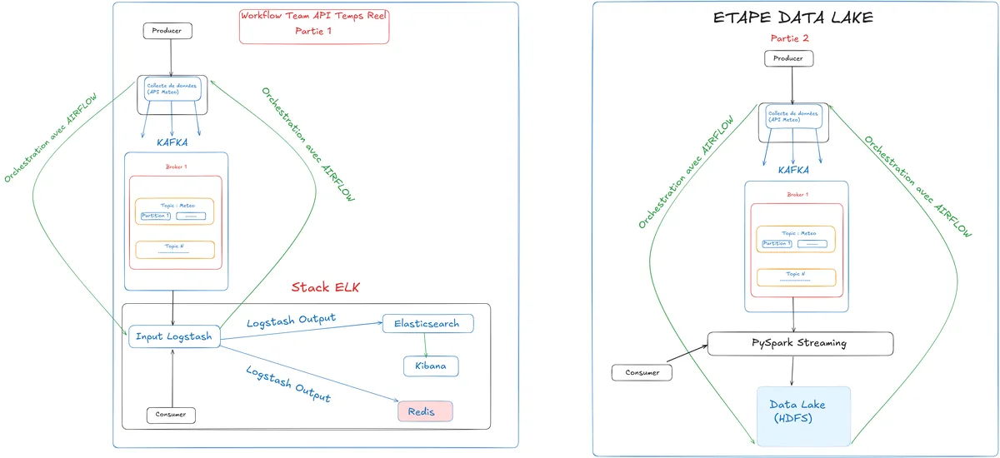
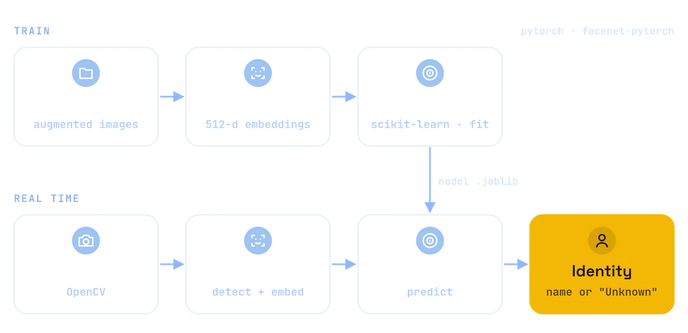
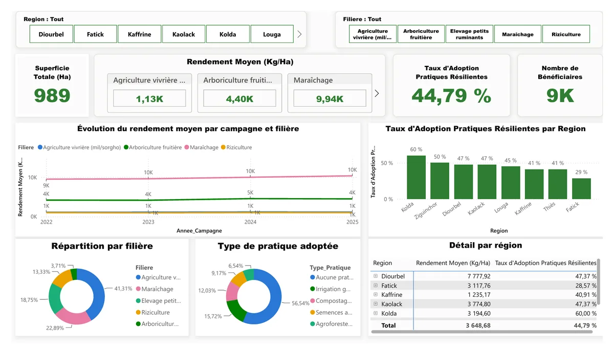
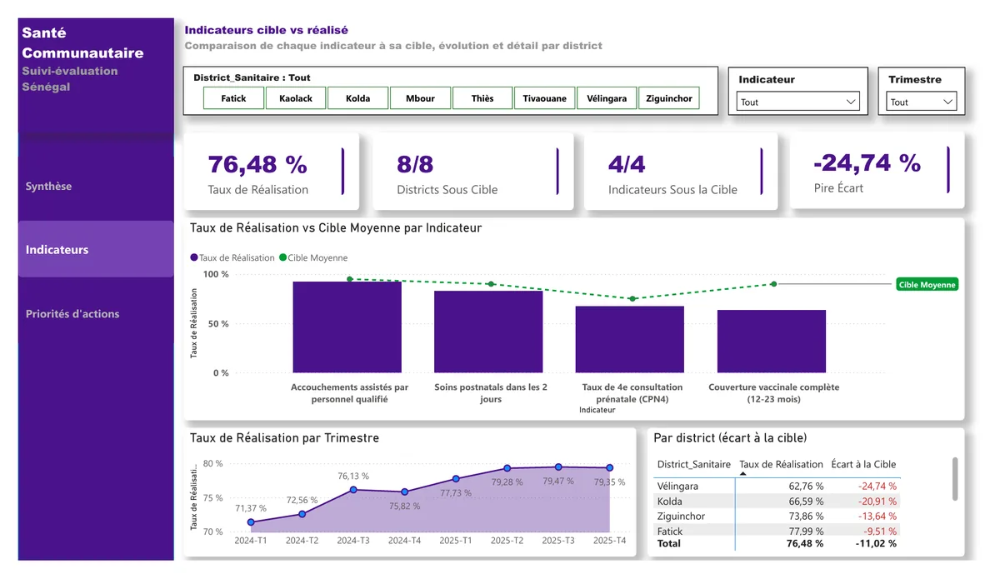

Data engineering
- Apache Airflow
- dbt
- ELT / ETL
- Airbyte
- Apache Spark
- Apache Kafka
- Batch & streaming
- Data quality tests

Alla NiangDakar, Senegal 🇸🇳
I build reliable data pipelines and production AI assistants that turn raw, messy data into tested tables, clear dashboards and useful answers.
Remote worldwide, freelance & collaborations
01ingest
I'm Alla NIANG, a Data & AI Engineer at Cuberfit in Dakar. I build ELT pipelines (Airflow, SQL, dbt) and CuberOne, Cuberfit's production voice AI assistant.
A full-stack web background keeps me close to product needs, and I work comfortably in remote, English-speaking teams.
02transform
The tools I use to move data from source to decision, and to put AI into production.
03model
From a production AI assistant to end-to-end pipelines on Senegalese data.
Cuberfit's production voice AI assistant.
Two channels, one cloned voice: pre-generated audio for the most-asked FAQ answers, and a real-time agent that answers from the company knowledge base (RAG) and acts on the CRM and customer support through LLM tool calling, behind guardrails and a non-regression test suite.
Proprietary system, no public repository.
Citizen assistant for e‑senegal.sn administrative procedures

Answers citizens' questions in French, strictly from the official e‑senegal.sn procedures catalogue, with its sources. Runs fully local with Llama 3.2, ChromaDB and FastAPI.
A RAG assistant that answers citizens' questions about administrative procedures on e‑senegal.sn, the Senegalese government's online one-stop portal, in French and strictly from its document base. A scraper pulls the official procedures catalogue from the portal's public GraphQL API; documents are chunked by section, embedded and indexed in ChromaDB. Retrieved chunks are re-ranked (title and keyword boosts, score threshold) before a local LLM generates the answer, streamed with its sources to a React chat interface.
The system prompt enforces a fixed answer structure (documents to provide, cost, processing time) and an explicit "not enough information" reply instead of guessing.
Energy affordability ELT pipeline

Bronze/Silver/Gold ELT on regulator (CRSE) tariff PDFs for 5 Senegalese electricity operators, from AWS S3 to Snowflake to Power BI. dbt models are tested on every run.
Bronze/Silver/Gold ELT on regulator (CRSE) tariff PDFs for 5 Senegalese electricity operators: Scrapy + pdfplumber ingestion, versioned landing in AWS S3, Airflow COPY INTO Snowflake, dbt models tested on every run, Power BI serving. Infrastructure declared in Terraform, GitHub Actions CI.

Internet price comparison · dbt + DuckDB star schema
Compares internet offers across operators and countries, normalised to a price per Mb/s. Prices live as dated facts in a dbt + DuckDB star schema.
Playwright scrapers archive dated, immutable HTML/JSON snapshots of operator pages (Orange SN and Orange CI so far); dbt on DuckDB models them into dimensions and a fact_tarif table. Power BI serves as the analysis lab through CSV exports; a public Streamlit site is planned.

Maritime big data pipeline
Batch and streaming pipeline on Port Autonome de Dakar data, from Kafka and Spark to a PostgreSQL warehouse. Orchestrated with Airflow, monitored with ELK.
Ingestion with Apache Kafka and Spark, raw storage on HDFS, Airflow-orchestrated ETL into a PostgreSQL star-schema warehouse, data quality checks with Great Expectations, Docker Compose deployment, ELK and Grafana monitoring.

Real-time & batch weather data pipeline
Streams live weather data from the Tomorrow.io API through Kafka and PySpark into an HDFS data lake. Orchestrated with Airflow, monitored with ELK.
Modular Docker Compose stacks (core, Airflow, monitoring, data warehouse, utilities) started by a single script; PostgreSQL for Airflow metadata and the data warehouse; Logstash feeds Elasticsearch/Kibana and Redis. The Streamlit dashboard is still incomplete.

Real-time biometric identification of learners
Detects faces from a webcam with MTCNN, encodes them as FaceNet embeddings and identifies people with an SVM classifier. Unrecognised faces are labelled "Unknown".
Three scripts: extract 512-d embeddings from an augmented dataset, train the SVM classifier (scikit-learn), then run real-time recognition on the webcam with OpenCV.
Power BI monitoring & evaluation dashboards on Senegalese public references.

Partly simulated dataMonitoring & evaluation dashboard · Senegal
Tracks the adoption of climate-resilient practices and their effect on yields, by region and value chain. DAPSA/EAA reference figures plus simulated program data.
4 report pages (Home, Overview, Geographic breakdown, Insight) with Region and Value-chain filters synced across pages. Two-table model (campaigns → farmer groups) with DAX measures for average yield, adoption rate and share of women beneficiaries. Demo scope: 8 regions, 2022–2025.

Partly simulated dataLogframe dashboard, target vs actual · Senegal
Compares 4 community health indicators against their targets across 8 health districts, to spot territorial gaps. EDS-Continue 2023 (ANSD) references plus simulated program data.
3 report pages (Summary, Indicators, Action priorities) filtered by health district, indicator and quarter. DAX measures for completion rate, gap to target and indicators below target, with conditional formatting on the gap. Demo scope: 8 quarters, 2024–2025.
04serve
Mar 2026 – Present
Cuberfit · Dakar
Jun 2024 – Nov 2024
DSCALE.io, Medad Holding · Dubai
Oct 2023 – Oct 2024
Appen
Mar 2022 – Oct 2022
IT Department (DSI), Université Iba Der Thiam · Thiès
peer review
What former colleagues and classmates wrote on LinkedIn.
“A rigorous, business-oriented data professional, he knows how to turn raw data into clear analyses that are useful for decision-making. […] a reliable, efficient profile, immediately operational.”
Translated from French
“Alla is a strong asset: a data engineer has to master everything on the development side, but more and more the job is about handling errors and ensuring good performance without wasting resources. I recommend Alla because he is well placed for it.”
Translated from French
“He excels at designing robust, scalable and well-documented data pipelines. Alla is an excellent teammate: rigorous, a natural teacher, and with a great ability to pass on technical knowledge in a clear and accessible way.”
Translated from French
05validate
Every credential links to its public verification page.
06deploy
Open to remote roles worldwide, freelance missions and collaborations. The fastest way to reach me is email or WhatsApp.